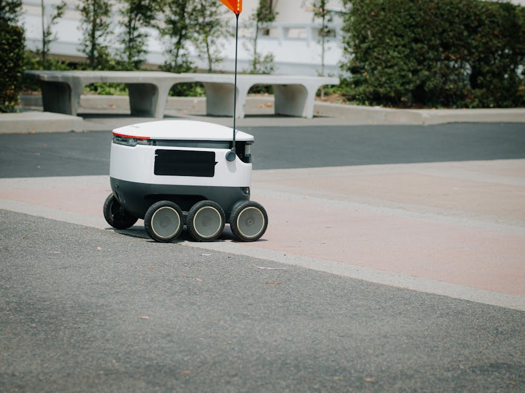

Imagine a future where your car drives itself, navigating bustling city streets, smoothly changing lanes, and even parking with precision, all while you relax, study, or simply enjoy the view. This isn't just a scene from a sci-fi movie anymore; it's the rapidly unfolding reality of autonomous vehicles and self-driving technology. At MakerWorks, we believe in empowering the next generation of innovators, and there's no better way to ignite that spark than by exploring the cutting-edge world of robotics that's transforming our everyday lives, right here in India and across the globe.
What Exactly Are Autonomous Vehicles?
An autonomous vehicle, often called a self-driving car, is a vehicle capable of sensing its environment and operating without human involvement. This means it can navigate to a predetermined destination without requiring a human to take control. Think of it as a robot with wheels, but a very smart one!
The Society of Automotive Engineers (SAE) has defined six levels of driving automation, from Level 0 (no automation, a human does everything) to Level 5 (full automation, the vehicle handles all driving tasks in all conditions). Most cars with advanced driver-assistance systems (ADAS) today, like adaptive cruise control or lane-keeping assist, fall into Level 1 or 2. True self-driving cars, operating at Level 4 or 5, are still largely in testing phases but are making incredible progress.
The Brains Behind the Wheels: How Do They Work?
Self-driving cars are complex marvels of engineering, combining sophisticated hardware (sensors) with intelligent software (AI and algorithms). Let's break down the key components:
1. Sensing the World: The Eyes and Ears of the Car
Just like humans use their eyes and ears to understand their surroundings, autonomous vehicles rely on an array of sensors:
- LiDAR (Light Detection and Ranging): This is like a superpower for seeing in 3D! LiDAR systems emit thousands of laser pulses per second and measure the time it takes for them to return. This creates a highly detailed, 360-degree 3D map of the car's surroundings, detecting objects, their shape, and distance with incredible accuracy.
- Radar (Radio Detection and Ranging): Radar uses radio waves to detect the speed and distance of objects. It's excellent for seeing through fog, rain, and snow, where cameras or LiDAR might struggle. It helps identify other vehicles and obstacles even in challenging weather.
- Cameras: These are the "eyes" that see the world in colour. Cameras are crucial for identifying traffic lights, road signs, lane markings, pedestrians, and other vehicles. Paired with advanced computer vision algorithms, they can understand complex visual information.
- Ultrasonic Sensors: These small sensors use sound waves to detect nearby objects, especially useful for low-speed maneuvers like parking, helping the car avoid bumps and scrapes.
- GPS (Global Positioning System) & IMU (Inertial Measurement Unit): GPS provides the car's precise location on a map, while the IMU tracks its orientation, speed, and acceleration. Together, they help the car know exactly where it is and how it's moving.
2. Making Sense of Data: Perception and Localization
Once the sensors collect vast amounts of data, the car's computer system gets to work:
- Perception: This involves processing all the raw sensor data to create a comprehensive understanding of the environment. It identifies and classifies objects (is that a pedestrian, a bicycle, or a parked car?), tracks their movement, and predicts their behaviour. This is where Artificial Intelligence and Machine Learning play a huge role!
- Localization: Knowing exactly where the car is on a high-definition map, even down to a few centimetres. This is critical for safe navigation, especially in complex urban environments.
3. Planning the Journey: Path Planning and Control
With a clear picture of its surroundings and its own position, the car then plans its actions:
- Path Planning: The system calculates the safest and most efficient path to the destination, considering traffic rules, obstacles, and comfort. It decides when to accelerate, brake, turn, or change lanes.
- Control: Finally, the control system translates these plans into physical actions. It sends commands to the car's steering, accelerator, and braking systems to execute the planned trajectory smoothly and safely.
"The future of transportation is not just about moving people and goods; it's about creating safer, more efficient, and more accessible mobility for everyone."
The Magic of Sensor Fusion
No single sensor can do it all. Each has its strengths and weaknesses. LiDAR is great for 3D mapping but struggles in heavy rain. Cameras provide rich visual detail but can be affected by glare or poor lighting. Radar works well in adverse weather but has lower resolution. The real magic happens with sensor fusion, where data from all these different sensors is combined and processed together.
Imagine you're trying to identify an object in the dark. Your eyes might struggle, but if you could also feel its shape (tactile sense) and hear its movement (auditory sense), you'd have a much better idea of what it is. Sensor fusion works similarly, leveraging the strengths of each sensor to overcome the limitations of others, creating a more robust and reliable understanding of the environment.
Here's a simplified Python example demonstrating how different "sensor" readings might be combined to estimate an object's distance:
def sensor_fusion_distance(lidar_reading, radar_reading, camera_estimate):
"""
A simplified function to fuse sensor data for distance estimation.
In a real system, this would involve complex algorithms (e.g., Kalman filters).
"""
# Prioritize LiDAR for accuracy, but use Radar for robustness in bad conditions
# and Camera for confirmation.
if lidar_reading is not None and lidar_reading > 0:
# If LiDAR has a valid reading, give it high weight
fused_distance = lidar_reading * 0.6
else:
fused_distance = 0
if radar_reading is not None and radar_reading > 0:
# Add radar contribution, especially if LiDAR is weak/missing
fused_distance += radar_reading * 0.3
if camera_estimate is not None and camera_estimate > 0:
# Add camera estimate for confirmation/refinement
fused_distance += camera_estimate * 0.1
# Basic check to ensure a reasonable output if all inputs are zero/none
if fused_distance == 0 and (lidar_reading or radar_reading or camera_estimate):
return max(val for val in [lidar_reading, radar_reading, camera_estimate] if val is not None)
elif fused_distance == 0:
return None # No valid readings
return fused_distance
# Example usage:
# lidar_data = 5.2 # meters
# radar_data = 5.5 # meters
# camera_data = 5.0 # meters (estimated from image)
# print(f"Fused distance: {sensor_fusion_distance(lidar_data, radar_data, camera_data)} meters")
# # Scenario: LiDAR fails
# print(f"Fused distance (LiDAR failed): {sensor_fusion_distance(None, radar_data, camera_data)} meters")
Challenges and the Road Ahead in India
While the potential of autonomous vehicles is immense, especially in a country like India, there are unique challenges:
- Diverse Road Conditions: From well-marked highways to unpaved rural roads, India's infrastructure varies greatly.
- Unpredictable Traffic: A mix of cars, two-wheelers, auto-rickshaws, pedestrians, and even animals creates a highly dynamic and challenging environment for AI to navigate.
- Infrastructure: Clear lane markings, consistent road signs, and reliable GPS signals are not uniformly available everywhere.
- Cost: The advanced sensor suites and computing power required make these vehicles expensive, which needs to become more affordable for widespread adoption.
- Ethical Considerations: Who is responsible in case of an accident? How should the car make decisions in unavoidable dilemmas? These are complex questions that societies globally are grappling with.
However, these challenges also present incredible opportunities for innovation! Indian engineers and researchers are actively working on solutions tailored to our unique conditions, developing robust AI models that can handle the complexity of Indian traffic.
Why This Matters for You (Future Innovators!)
The world of autonomous vehicles is a vibrant field that brings together robotics, artificial intelligence, computer vision, data science, and mechanical engineering. Learning about self-driving technology isn't just about cars; it's about understanding complex systems, problem-solving, and building the future.
At MakerWorks, we encourage you to dive into these exciting areas. Whether it's building a small line-following robot, programming a drone, or experimenting with basic AI algorithms, every step you take brings you closer to contributing to revolutionary technologies like self-driving cars.
Conclusion: Drive into the Future with MakerWorks!
Autonomous vehicles are poised to redefine transportation, offering the promise of safer roads, reduced traffic congestion, and more accessible mobility for everyone. While there's still a journey ahead, the progress being made is nothing short of astounding.
Are you excited by the idea of creating intelligent machines that can perceive, think, and act? Do you want to be part of the generation that solves the challenges of tomorrow? Then join the MakerWorks community! Explore our workshops, courses, and projects designed to equip you with the skills and knowledge to become a robotics and STEM superstar. The future of autonomous technology is waiting for your brilliant ideas!
Ready to start your journey into robotics? Visit makerworkslab.in today!